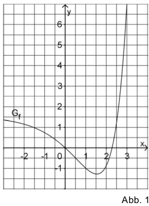

Function and its aniderivative¶
Problem
Figure 1 displays the graph \(G_f\) of a function \(f\) defined in \(\mathbb{R}\). Sketch in figure 1 the graph of the integral function \(F:x\mapsto \int\limits_1^x f(t)\mathrm{d}t\) defined in \(\mathbb{R}\). Consider with appropriate precision in particular the zeros and extrema of \(F\) as well as \(F(0)\).
Solution
If a function possesses a zero with a change of sign, the corresponding antiderivative possesses a local extremum at this point. It is a maximum if the slope of the function is negative. If, on the other hand, the slope is positive, the antiderivative has a minimum at that point.
Considering the function given in the problem text, one finds zeros of \(f(x)\) at \(x_1=0\) and \(x_2\approx 2.25\). In the first case, the slope is negative so that \(F(0)\) represents a local maximum of the antiderivative. At the other point \(x_2\) the slope of \(f\) is positive so that \(F(x_2)\) is a local minimum.
Another property of \(F(x)\) follows from the lower limit of integration at \(t=1\). As a consequence, \(F(1)=0\). Finally, from counting squares, \(F(0)=-\int\limits_0^1 f(t)\mathrm{d}t\) can be estimated to equal \(\frac{1}{2}\).
By means of Sage, we can carry out the integration provided the function \(f\) is known. We choose
which possesses the properties used in the above reasoning. In addition, its qualitative form resembles that given in figure 1.